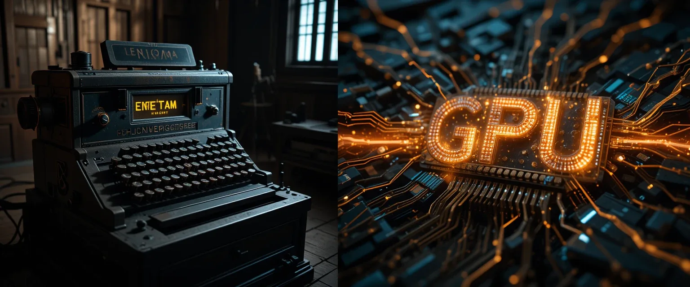
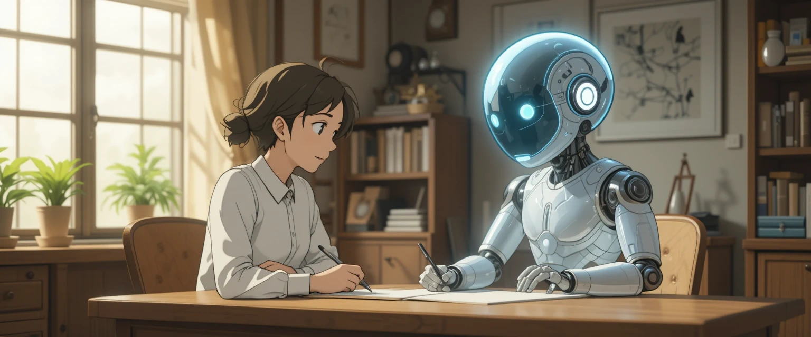

Estás a punto de descubrir la herramienta creativa más potente de la historia. No como una amenaza, sino como tu próximo copiloto.
Para entender el futuro, debemos mirar al pasado. La IA de hoy nació de lugares que nunca hubieras imaginado.
En la SGM, la lógica de Turing para descifrar códigos sentó las bases conceptuales de la computación y la IA. Era la idea sin la potencia.
Durante décadas, las ideas existían, pero la falta de poder computacional (hardware) frenó casi todo el progreso práctico.
La demanda de gráficos realistas impulsó la creación de GPUs (Tarjetas Gráficas) con miles de núcleos para procesamiento en paralelo. Esta fue la "gasolina" que la IA necesitaba.

Domina estos 4 conceptos y tendrás la clave para comunicarte eficazmente con cualquier IA.
Imagina un bibliotecario que se ha leído TODO internet. No "piensa", pero es un genio prediciendo la siguiente palabra más probable.
Son las piezas de LEGO del lenguaje. La IA no lee palabras, lee tokens. Todo tiene un coste en tokens.
La memoria a corto plazo de la IA. Si la conversación es muy larga, "olvida" el principio para hacer espacio a lo nuevo.
La IA aprende de nosotros, con lo bueno y lo malo. Nuestro trabajo como creadores es ser el filtro ético y corregir sus prejuicios.
¿No sabes qué pedir? Aquí tienes un superpoder: haz que la IA te entreviste a ti. Cambia las reglas del juego.
Actúa como un [Rol del Experto].
Quiero lograr [Mi Objetivo], pero no estoy seguro de qué información necesitas.
Por favor, hazme todas las preguntas que necesites, una por una, para poder darte el contexto perfecto y que puedas crear el mejor [Resultado deseado] posible.
Crear imágenes es como tener un director de arte en tu bolsillo. La fórmula mágica es simple.
El **Estilo** es tu ingrediente secreto. Cambia "fotorrealista" por "acuarela" o "cyberpunk" y transforma la misma idea en algo completamente nuevo.
¿Puedo usar lo que creo? La respuesta corta es "depende". Aprende a verificarlo en 5 minutos.
(ChatGPT, Copilot)
¡Pregúntale directamente!
Según tus términos de servicio actuales, ¿puedo usar el contenido que genero contigo para fines comerciales?(Midjourney, etc.)
Conviértete en detective. Busca en Google:
[Nombre de la Herramienta] terms of service commercial use
No. Pero alguien que usa la IA sí podría hacerlo. La IA no es tu reemplazo, es tu copiloto. El que aprende a volar con este copiloto llegará mucho más lejos y más rápido.
¿Usar una calculadora es trampa? Es usar una herramienta. El plagio es copiar a otro humano. La IA genera algo nuevo. Tu labor es inyectarle tu voz, tu experiencia y tu ética.
¡Para nada! Todo lo que hemos visto hoy se puede hacer con herramientas gratuitas o con planes gratuitos muy generosos. La barrera no es económica, es de conocimiento.
Hoy abrimos la puerta. Pero imagina crear videos, clonar tu voz y automatizar flujos de trabajo completos. Ese es el futuro, y está a tu alcance.
A partir de hoy, ya no eres un espectador. Eres un arquitecto de esta nueva era.